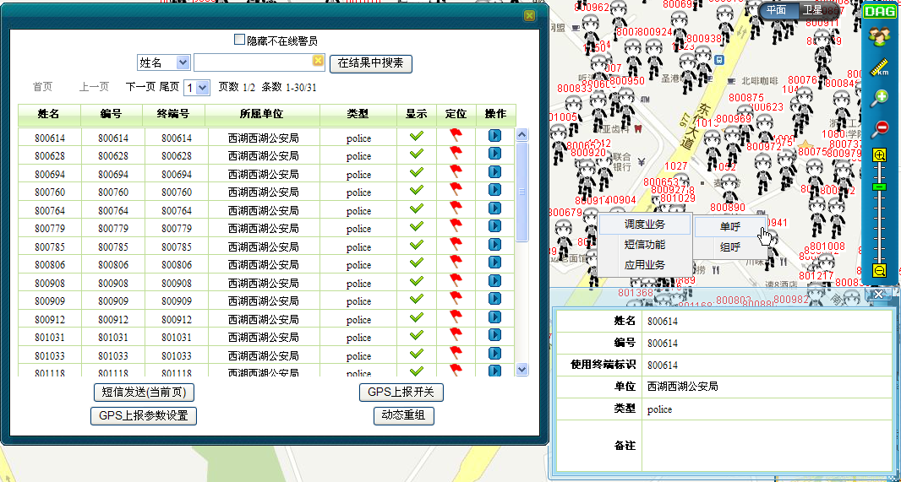

移动用户的选取模式包括：
在地图上找到移动用户1，并单击左键即可选中用户1，同时在用户1右上角有选中的标记。若单击另一用户2，则用户1被取消选中，选中标记转到了用户2上。
当用户在地图上处于被选中状态时，调度员在地图任意位置单击左键，用户被取消选中，选中标记消失。
调度员可按住Ctrl键，然后逐个单击要选中的用户，被选中的多个用户右上角都有选中的特殊标记。
当调度员在地图上任意位置单击左键，则被选中的多个用户都被取消选中，选中标记消失。
若需选中某一区域内的所有用户，可采用“框选”的操作方式。
1）在地图操作工具栏中单击“ ”框选图标。
”框选图标。
2）在地图上框选移动用户，该区域内被选中的所有用户（包括显示和隐藏的）都将呈现在用户列表中，并且提供显示、隐藏、快速定位、群发短信等功能，如下图所示。
3）同时，用户也可在“当前选中用户列表”对话框中查看某一用户详细信息。

框选移动用户
 说明：
说明：
框选功能特别适用于当大量警员重叠在一起无法区分的情况。
框选功能还支持短信群发功能，当某区域发生突发事件时，调度员可以快速选择这一区域附近的警员，向他们发送短信下达命令（点击短信按钮），便于指令的下发与各警员之间的相互交流沟通。
框选功能还支持GPS上报开关，GPS上报参数设置的功能，调度员可以快速选择这一区域附近的警员，对他们进行GPS上报开关和上报参数的设置命令（点击GPS上报开关和GPS上报参数设置按钮）
框选功能还支持动态重组的功能，调度员可以快速选择这一区域附近的警员，对他们进行动态重组。
单击用户列表右侧箭头，调度员可选中该用户或者对该用户进行选中、调度业务（包括单呼、组呼）、应用业务（包括定位、锁定以及关注）以及短信功能（包括个人短信、小组短信以及状态信息）。
Copyright © 2012 Eastcom, Inc. All rights reserved. |
||